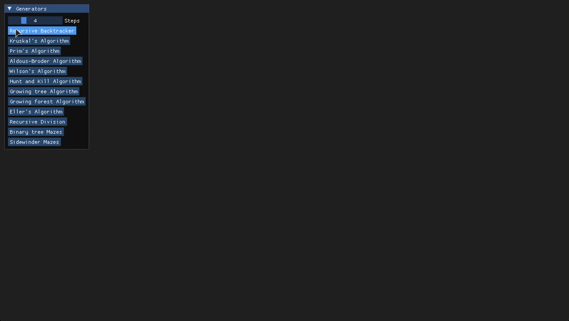

Recursive Backtracker
Carving a perfect maze with a depth-first walk
Recursive Backtracker #
Walk into a random unvisited room, knocking down the wall behind you, and keep going until you’re stuck. Then retrace your steps until you find a room with an unexplored neighbour, and head off from there. When you’ve backed all the way out to the start, every room has been visited.
In graph terms this is a randomized depth-first search. We only step into rooms we haven’t visited, so no loops form, and we don’t stop until every room is reached, so nothing is left inaccessible. That is exactly the “perfect maze” guarantee from the introduction.

Pseudocode #
carve(room):
mark room as PATH
for each direction, in random order:
neighbour = room + 2 * direction
if neighbour is in bounds and still a WALL:
knock out the wall between room and neighbour
carve(neighbour)
start: carve(a random room)Solution #
recursive_backtracker :: proc(maze: ^[COLS][ROWS]Cell, room: [2]i32) {
maze[room.x][room.y] = .PATH
dirs := [4][2]i32{{-1, 0}, {1, 0}, {0, -1}, {0, 1}}
rand.shuffle(dirs[:])
for dir in dirs {
next := room + 2 * dir
if !is_cell_in_bounds(next) || maze[next.x][next.y] != .WALL do continue
wall := room + dir
maze[wall.x][wall.y] = .PATH
recursive_backtracker(maze, next)
}
}
generate :: proc(maze: ^[COLS][ROWS]Cell) {
recursive_backtracker(maze, random_room())
}Run it, press space a few times, and you’ll get a new maze each time.
odin run .